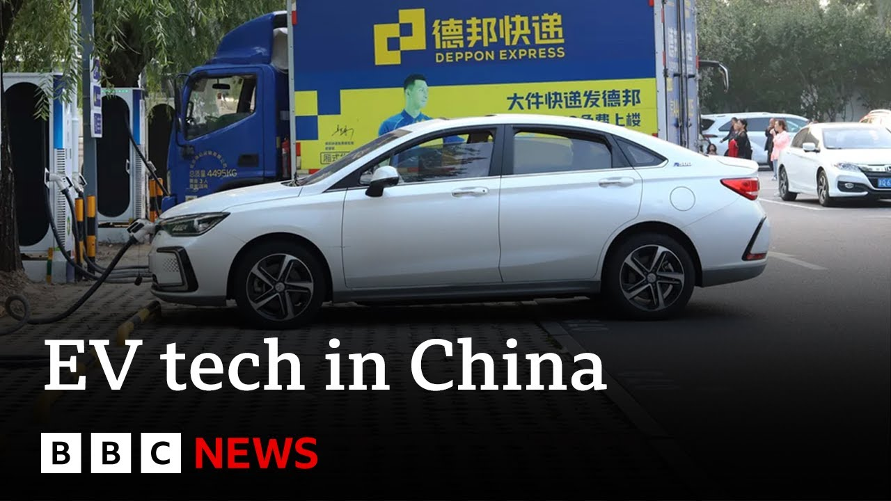

【中国蓬勃发展的电动汽车产业 | BBC新闻】
Summary: China's Guangdong province, once an industrial hub with pollution, is now filled with green license plates indicating EVs, showcasing how China has rapidly become a global leader in electric vehicles through government subsidies and innovation.
摘要： 中国的广东省曾是污染严重的工业中心，如今满街都是代表电动汽车的绿色车牌，展示了中国如何通过政府补贴和创新迅速成为全球电动汽车领导者。

⏱️ Estimated Reading Time: 8 min
📚 六级生词 📚 雅思生词 📚 托福生词 📚 专八生词 📚 SAT生词 📚 考研生词 📚 GRE生词 📚 高考生词
This is Guangjo.
这里是广州。
Traditionally, it was China's industrial heartland.
传统上，它是中国的工业中心。
Once known for its polluting cities, today the streets are a sea of green number plates.
这里曾以污染城市闻名，如今街道上满是绿色车牌。
The roar of rush hour has become a gentle hum.
高峰时段的轰鸣已变成轻柔的嗡鸣。
So, green means it's an EV and blue means that it's not an EV.
绿色车牌代表电动车，蓝色则不是。
But look, green.
看，绿色车牌。
Green is an electric moped.
绿色代表电动摩托车。
It's another green one.
又是一辆绿色车牌的。
Another green one.
再来一辆绿色车牌的。
The point is that for most countries, EV is seen as the future of driving.
关键在于，对多数国家而言，电动汽车被视为驾驶的未来。
But for China, the future has arrived.
但在中国，未来已至。
It's here now.
它已经到来。
Thanks to heavy government subsidies, the former nation of bicycles has become the world's leader in electric vehicles.
得益于丰厚的政府补贴，这个曾经的自行车王国已成为全球电动汽车领导者。
Whether you're buying the car or building the car, providing the electricity or assembling the battery, everyone in China is entitled to government money and assistance.
无论是购车、造车、供电还是组装电池，中国的每个人都能获得政府资金和援助。
It's led to dozens of Silicon Valley type startups across the country, but only the fittest have survived.
这催生了全国数十家硅谷式初创企业，但只有最强者存活下来。
This is Xbang in Guangjo, where internet live streamers sell cars in real time.
这是广州的小鹏汽车，网络主播在此实时卖车。
Barely a decade old, Xbang is already in the world's top 10 EV producers.
成立不到十年，小鹏已跻身全球电动汽车生产商前十。
Have a look, shall we?
要看看吗？
Sure.
当然。
Okay.
好的。
Well, we are inside the Mona now.
我们现在坐在Mona车里。
Um, you were saying that this is a typical car for a firsttime buyer.
你说这是首次购车者的典型选择。
I mean, I've seen the type of car that first time buyers normally buy.
我见过首次购车者通常买的车。
It doesn't really look like this.
看起来不太像这样。
Um, talk me through what we've got here.
介绍一下这款车的配置吧。
Yes, because we actually tailor for young customers preference such as this huge uh 15.6 in screen which very smooth uh inter interaction with the customers.
是的，我们专门为年轻客户定制了偏好配置，比如这块15.6英寸大屏，与客户的交互非常流畅。
We even offer the 18 speakers as a standard 18 speakers sound systems okay as standard and we offer this heating and ventilation seats which usually I mean appear on the luxury models so all the comfort features for our target customers.
我们甚至将18扬声器音响系统作为标配，还提供加热通风座椅——这些通常出现在豪华车型上——为目标客户提供所有舒适功能。
Mike says that young people are increasingly turning away from the western car brands that would have brought social status to their parents and instead they're prioritizing modcon features that the trendy domestic brands can provide.
迈克表示，年轻人正逐渐抛弃父辈们追求社会地位的西方汽车品牌，转而优先选择时尚国产品牌提供的现代功能。
We then went on a test drive of a model that wasn't even on the market yet.
接着我们试驾了一款尚未上市的车型。
Their newest car has voice activation, an inbuilt entertainment system.
他们的最新车型具备语音激活功能和内置娱乐系统。
This is video streaming, correct?
这是视频流媒体功能吧？
It's also got genuinely impressive self-driving capability.
它还拥有真正令人印象深刻的自驾功能。
The car's just slowed down by itself.
车子刚刚自动减速了。
By itself.
自动的。
I My foot is actually off the brake pedal.
我的脚其实没踩刹车。
So, you're not touching anything?
所以你没碰任何控制装置？
Not touching anything.
完全没碰。
And it was quickly put to the test.
它很快迎来了考验。
What are these guys doing?
这些人在干嘛？
Wo.
哇。
Wo.
哇。
These guys are going down the wrong way.
这些人逆行了。
These guys are driving driving down the highway the wrong way.
这些人在高速上逆向行驶。
Yes.
是的。
To make a U-turn.
为了掉头。
Yeah.
对。
And we're still here.
我们还安然无恙。
Yeah.
是的。
We are alive.
我们还活着。
No one's being hurt.
没人受伤。
Yeah, this car's on the market for just $20,000.
这辆车售价仅2万美元。
Having already fought off fierce competition within China, Xbang is now looking internationally.
在国内激烈竞争中胜出后，小鹏正放眼全球。
We are selling well in Europe.
我们在欧洲销量很好。
We just launched in UK uh in March.
我们三月份刚进入英国市场。
Uh we see tremendous uh interest in our products.
看到市场对我们的产品兴趣浓厚。
It is uh you know traditionally a stigma attached to uh some Chinese products.
你知道，传统上某些中国产品带有负面印象。
But I would say probably it's more related to probably uh older generation of Chinese products.
但我觉得这可能更与老一辈中国产品有关。
European and UK customers seeing China can produce high quality and very good technology products in Shanghai.
欧美客户正看到中国能生产高质量高科技产品。
Meanwhile, drivers get to experience one of China's newest innovations.
与此同时，司机们正体验中国最新创新之一。
They're called swapping stations to replace your depleted battery in a matter of minutes.
这叫换电站，几分钟就能更换耗尽电池。
You simply drive in and the automated machines take care of the rest.
只需开进去，自动化机器会完成后续操作。
The company behind the technology is another EV startup called Neo.
该技术背后的公司是另一家电动车初创企业蔚来。
This car is, as you say, is battery swappable and which means that we can replace the battery, the whole battery in about 3 to 3 and 1/2 minutes.
如你所说，这辆车支持换电，意味着我们能在约3到3分半钟更换整个电池组。
And so effectively within the system, I can say and set a destination of the battery swap station and it's therefore inform the battery swap station that I'm going to be arriving at some point in the future.
在系统中，我可以设定换电站目的地，系统会提前通知换电站我将抵达。
when I get in to a few hundred meters away, it then actually gives me uh allocates me a battery and allocates me an actual sort of slot if there's already a queue and if there once it's your turn, you then drive right in front of the battery swap station and you push a button to accept um the process and then it's hands off from there.
当驶入几百米范围内时，系统会分配电池和排队序号；轮到时，只需开到换电站前按确认键，之后全程无需操作。
So now it's going to automatically park us into this power swap station.
现在车辆正自动泊入换电站。
And you can see the steering wheel is not moving because we're working with a steer by wire and it's effectively will reverse us in to the station.
方向盘没动，因为我们采用线控转向技术，车辆会自动倒车入位。
So we're in exactly the right position.
现在我们已精准就位。
Now the car is positioned in the the sort station.
车辆已在换电站停好。
So you see it's just picked the car up a little bit, removed the load from the suspension, and now the battery.
看，它微微抬升车身，卸去悬架负荷，现在开始换电池。
You will hear in a minute the There you go.
马上会听到——开始了。
You can hear the the unbolting of of the battery.
能听到电池螺栓松开的声音。
Now, it's state-of-the-art technology for less than the price of a full tank.
这项尖端技术的花费比加满一箱油还便宜。
After a quarter of a century, China has managed to make luxury mainstream.
二十五年后，中国成功将豪华变为主流。
Chinese are thinking about a future where they manufacture just about every single car for the world.
中国人正构想为全世界生产几乎所有汽车的未来。
They're looking around saying, "Anybody can do it better than us?"
他们环顾四周说："有人能比我们做得更好吗？"
Yeah, we're going to pretty much build every car in the world.
是的，我们几乎要造全世界的车。
Okay.
好吧。
Now, in a world scrambling to meet climate targets, this might be considered great news.
在各国争相实现气候目标的当下，这或许是好消息。
But there's politics at stake, too.
但其中也涉及政治。
And instead of thanking Beijing, Western countries are worried.
西方国家没有感谢北京，反而感到担忧。
They're slapping tariffs on Chinese-made EVs.
他们正对中国产电动车加征关税。
They're desperate to catch up in the green tech race.
他们迫切想在绿色科技竞赛中追赶。
But China has already changed the game.
但中国已改变游戏规则。